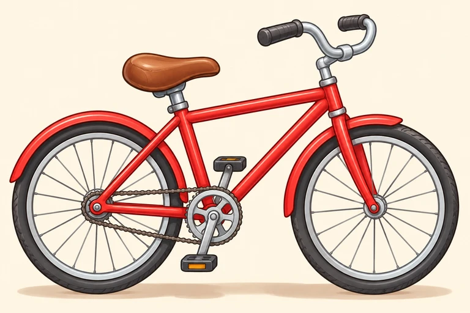
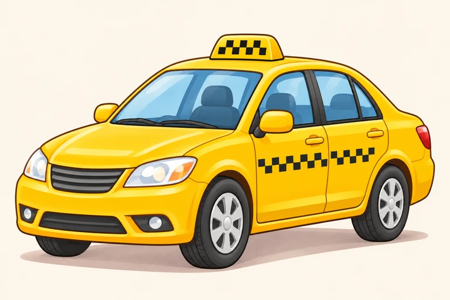

Bài 1 · Nơi muốn đếnBài 2 · Cách đi và phương tiệnBài 3 · Đọc, nghe và viết
Mỗi chuyến đi mở thêm một điều em biết.
Học từ, nghe chậm, ABC và hội thoại; sáu đề theo ba cấp độ.
Bài1Nơi em muốn tham quanSGK trang 52–53
Where do you want to visit?
I want to visit Ha Noi Opera House. Dragon Bridge: Cầu Rồng · Ngo Mon Square: Quảng trường Ngọ Môn · Ho Chi Minh City Museum: Bảo tàng Thành phố Hồ Chí Minh.
Want to + visit + nơi đến. Không viết want visit hoặc visit to. Museum: bảo tàng · square: quảng trường · bridge: cầu. Tên địa danh có chữ và audio để em học, không phải đoán từ tranh chung.
Bài2Hỏi cách đến nơiSGK trang 54–55
How can I get to…? — You can get there…
by bus

by bicycle

by taxion foot
How can I get to Dragon Bridge? You can get there by bicycle. By bus / by bicycle / by taxi; riêng đi bộ là on foot. Không dùng by foot hoặc by a bus.
Can + get, không can gets/can to get. Excuse me! I am lost. — Xin lỗi, mình bị lạc. Thank you so much! — You are welcome. Đọc thẻ đang làm: cùng nơi đến, hai bạn có thể dùng phương tiện khác nhau.
Bài3Ngữ điệu, đọc và viết kế hoạchSGK trang 56–57
Câu hỏi Yes/No thường lên giọng.
Is it time for a trip? ↗ Is it far from here? ↗ Phần đọc có by train / by ferry / on foot; phần luyện có by boat. Phân biệt từng chặng: firstly/next/then/finally.
Thẻ tự soạn: Nam · Dragon Bridge · by bus. I want to visit Dragon Bridge. You can get there by bus. Tự kiểm tra: đã có to trước visit chưa? Can + get? By phương tiện hay on foot? Đúng người và đúng chặng chưa? Lộ trình giả định phục vụ học tiếng Anh.
Nội dung tự soạn, bám Unit18 · Global Success5, tập hai